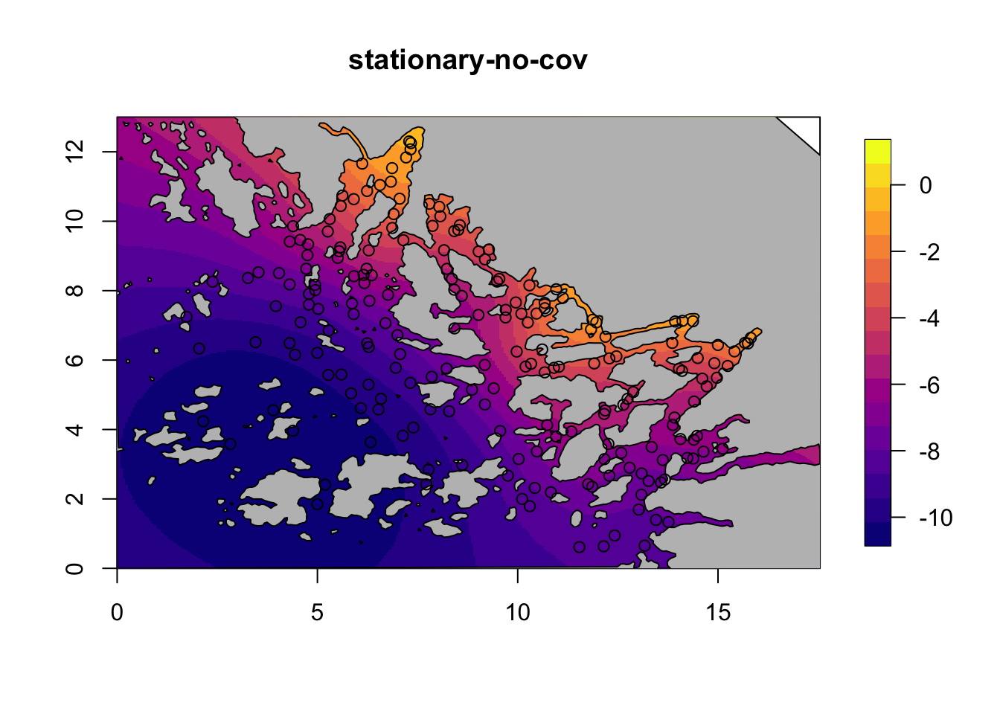

The Barrier model applied to the Archipelago data
Haakon Bakka
BTopic107 updated 01. February 2018
1 About
This topic covers how to visualize spatial models near a coast. The method for visualizing spatial models can be used for other models. The knowledge we gain on the spatial models we are looking at is useful when using these models.
1.1 Initialisation and dependency
We load the libraries and functions we need. You may need to install these libraries (Installation and general troubleshooting). Feel free to save the web location where the data is as an R-file on your computer. We also set random seeds to be used later.
library(INLA); library(fields)
library(rgeos)
library(viridisLite)
set.seed(2016)
set.inla.seed = 20161.2 Data
1.2.1 Download data
An internet connection is required, unless you have already downloaded the repository.
dir.create("data/")
download.file(url = "https://haakonbakkagit.github.io/data/WebSiteData-Archipelago.RData", destfile = "data/WebSiteData-Archipelago.RData")1.2.2 Load data
## Load data
load(file = "data/WebSiteData-Archipelago.RData")
# - if you have saved the file locally
## What is loaded
# - poly.water is our study area
# - df is our dataframe to be analysed
# - dat is the orginial dataframe
str(poly.water, 1)## Formal class 'SpatialPolygons' [package "sp"] with 4 slots1.2.3 Data citations
For a description of the data see (Kallasvuo, Vanhatalo, and Veneranta 2016). Data collection was funded by VELMU and Natural Resources Institute Finland (Luke).
2 Generic model setup
We choose one of the four fish species to model, the smelt
df$y = df$y.smeltTo keep track of our models, we define a list containing all the models.
M = list()
# - the list of all models
M[[1]] = list()
# - the first model
M[[1]]$shortname = "stationary-no-cov"
# - a short description, the name of the model
M[[2]] = list()
M[[2]]$shortname = "stationary-all-cov"
M[[3]] = list()
M[[3]]$shortname = "barrier-no-cov"
M[[4]] = list()
M[[4]]$shortname = "barrier-all-cov"2.1 The mesh: Dependency BTopic104
The following code is from the dependency. The mesh we are using was called mesh4 in BTopic104. You probably want to read this dependency topic.
We had to adjust max.edge. When running with max.edge=0.95 we got ranges near 3. As we mentioned in BTopic104, the max.edge must be at most ca range/5.
max.edge = 0.6
bound.outer = 4.6
mesh = inla.mesh.2d(boundary = poly.water,
loc=cbind(df$locx, df$locy),
max.edge = c(1,5)*max.edge,
cutoff = 0.06,
offset = c(max.edge, bound.outer))
plot(mesh, main="Our mesh", lwd=0.5); points(df$locx, df$locy, col="red")mesh$n## [1] 65392.2 The stack
To connect the observations \(y_i\) (at locations \(s_i\)) to the mesh nodes s, we have the so-called A-matrix.
A.i.s = inla.spde.make.A(mesh, loc=cbind(df$locx, df$locy))Next we set up the stack, needed for all spatial models in INLA.
stk <- inla.stack(data=list(y=df$y, e=df$exposure),
effects=list(s=1:mesh$n,
data.frame(m=1, df[ ,5:11]),
# - m is the intercept
iidx=1:nrow(df)),
A=list(A.i.s, 1, 1),
remove.unused = FALSE, tag='est') 3 Stationary models
To set up the stationary spatial model, we first define the spatial Model Component.
spde = inla.spde2.pcmatern(mesh, prior.range = c(6, .5), prior.sigma = c(3, 0.01))
# - We put the prior median at approximately 0.5*diff(range(df$locy))
# - - this is roughly the extent of our study area
# - The prior probability of marginal standard deviation 3 or more is 0.01.Then we define the two formulas.
hyper.iid = list(prec = list(prior = 'pc.prec', param = c(3, 0.01)))
# - the param the same as prior.sigma above, with the same interpretation
M[[1]]$formula = y~ -1+m + f(s, model=spde) + f(iidx, model="iid", hyper=hyper.iid)
# - no covariates (except intercept m)
M[[2]]$formula = as.formula(paste( "y ~ -1 + ",paste(colnames(df)[5:11], collapse = " + ")))
M[[2]]$formula = update(M[[2]]$formula, .~. +m + f(s, model=spde) + f(iidx, model="iid", hyper=hyper.iid))Let us check that our objects are correct.
print(M[[1]])## $shortname
## [1] "stationary-no-cov"
##
## $formula
## y ~ -1 + m + f(s, model = spde) + f(iidx, model = "iid", hyper = hyper.iid)print(M[[2]])## $shortname
## [1] "stationary-all-cov"
##
## $formula
## y ~ dptLUKE + dptavg15km + dist30m + joetdsumsq + lined15km +
## swmlog10 + temjul15 + m + f(s, model = spde) + f(iidx, model = "iid",
## hyper = hyper.iid) - 1We will not run the INLA calls until we have set up all the models.
4 Barrier models
First we divide up the mesh accoring to our study area polygon.
tl = length(mesh$graph$tv[,1])
# - the number of triangles in the mesh
posTri = matrix(0, tl, 2)
for (t in 1:tl){
temp = mesh$loc[mesh$graph$tv[t, ], ]
posTri[t,] = colMeans(temp)[c(1,2)]
}
posTri = SpatialPoints(posTri)
# - compute the triangle positions
normal = over(poly.water, posTri, returnList=T)
# - checking which mesh triangles are inside the normal area
normal = unlist(normal)
barrier.triangles = setdiff(1:tl, normal)
poly.barrier = inla.barrier.polygon(mesh, barrier.triangles)## Warning in RGEOSUnaryPredFunc(spgeom, byid, "rgeos_isvalid"): Self-
## intersection at or near point 0 0## mesh.polys is invalid## Warning in rgeos::gUnaryUnion(mesh.polys): Invalid objects found;
## consider using set_RGEOS_CheckValidity(2L)## Warning in RGEOSUnaryPredFunc(spgeom, byid, "rgeos_isvalid"): Self-
## intersection at or near point -4.5999999999999996 -0.91499688999999995## mesh.polys is invalid## Warning in rgeos::gUnaryUnion(mesh.polys): Invalid objects found;
## consider using set_RGEOS_CheckValidity(2L)barrier.model = inla.barrier.pcmatern(mesh, barrier.triangles = barrier.triangles, prior.range = c(6, .5), prior.sigma = c(3, 0.01))
# - this creates the INLA object for the modelM[[3]]$formula = y~ -1+m + f(s, model=barrier.model) + f(iidx, model="iid", hyper=hyper.iid)
# - no covariates (except intercept m)
M[[4]]$formula = as.formula(paste( "y ~ -1 + ",paste(colnames(df)[5:11], collapse = " + ")))
M[[4]]$formula = update(M[[4]]$formula, .~. +m + f(s, model=barrier.model) + f(iidx, model="iid", hyper=hyper.iid))Then we check
print(M[[3]])## $shortname
## [1] "barrier-no-cov"
##
## $formula
## y ~ -1 + m + f(s, model = barrier.model) + f(iidx, model = "iid",
## hyper = hyper.iid)print(M[[4]])## $shortname
## [1] "barrier-all-cov"
##
## $formula
## y ~ dptLUKE + dptavg15km + dist30m + joetdsumsq + lined15km +
## swmlog10 + temjul15 + m + f(s, model = barrier.model) + f(iidx,
## model = "iid", hyper = hyper.iid) - 14.1 Plot data
Now that we have a polygon for representing the land area (physical barrier), we plot the data locations.
par(mar=rep(.1, 4))
plot(df$locx, y=df$locy, pch=20, asp=1)
plot(poly.barrier, add=T, border="black", col="grey")5 Running all the models
Set up the initial values.
## Initial values
# - speeds up computations
# - improves accuracy of computations
# - set these to NULL the first time you run the model
M[[1]]$init = c(2.509,1.199,-0.574)
M[[2]]$init = c(1.162,0.313,-0.627)
M[[3]]$init = c(0.833,2.244,-0.471)
M[[4]]$init = c(0.044,1.274,-0.596)Next, we run the inference for the our models, which can take some time.
for (i in 1:length(M)){
print(paste("Running: ", M[[i]]$shortname))
M[[i]]$res = inla(M[[i]]$formula,
data=inla.stack.data(stk),
control.predictor=list(A=inla.stack.A(stk)),
family="poisson", E = e,
control.inla= list(int.strategy = "eb"),
control.mode=list(restart=T, theta=M[[i]]$init))
}## [1] "Running: stationary-no-cov"
## [1] "Running: stationary-all-cov"
## [1] "Running: barrier-no-cov"
## [1] "Running: barrier-all-cov"# - time: < 20 minThe initial values that we set M[[i]]$init:
for (i in 1:length(M)){
print(paste(round(M[[i]]$res$internal.summary.hyperpar$mode, 3), collapse = ','))
}## [1] "2.509,1.199,-0.574"
## [1] "1.144,0.314,-0.62"
## [1] "0.787,2.339,-0.471"
## [1] "-0.002,1.29,-0.581"5.1 Summaries
You can run these to see the model output.
#summary(M[[1]]$res)
#summary(M[[2]]$res)
#summary(M[[3]]$res)
#summary(M[[4]]$res)5.2 Logfiles
To understand how well the computations of the posterior worked, we look at the logfiles.
#M[[i]]$res$logfileDiscussing INLA inference in detail is out of scope of this topic. What we conclude from this is that the posteriors for the models without covariates are nicely behaved, and INLA is very successful. For the models with covariates, the posterior is a bit flat, and INLA is having a bit of difficulty. However, it is still sufficiently good.
6 Plot posterior spatial fields
6.1 Define the plotting function BTopic103
local.plot.field = function(field, mesh, xlim, ylim, ...){
stopifnot(length(field) == mesh$n)
# - error when using the wrong mesh
if (missing(xlim)) xlim = poly.water@bbox[1, ]
if (missing(ylim)) ylim = poly.water@bbox[2, ]
# - choose plotting region to be the same as the study area polygon
proj = inla.mesh.projector(mesh, xlim = xlim,
ylim = ylim, dims=c(300, 300))
# - Can project from the mesh onto a 300x300 grid
# for plots
field.proj = inla.mesh.project(proj, field)
# - Do the projection
image.plot(list(x = proj$x, y=proj$y, z = field.proj),
xlim = xlim, ylim = ylim, col = plasma(17), ...)
}6.2 Plot the models without covariates
for (i in c(1,3)) {
field = M[[i]]$res$summary.random$s$mean + M[[i]]$res$summary.fixed['m', 'mean']
local.plot.field(field, mesh, main=paste(M[[i]]$shortname), zlim=c(-10.5, 1))
plot(poly.barrier, add=T, col="grey")
points(df$locx, df$locy)
}
6.3 Plot the models with covariates
for (i in c(2,4)) {
field = M[[i]]$res$summary.random$s$mean + M[[i]]$res$summary.fixed['m', 'mean']
local.plot.field(field, mesh, main=paste(M[[i]]$shortname), zlim=c(-9, -4.5))
plot(poly.barrier, add=T, col="grey")
points(df$locx, df$locy)
}7 Compare fixed effects
Do a nice ggplot of the fixed effects between the spatial models with covariates.
## Set up dataframe with relevant results
res = M[[2]]$res$summary.fixed[ ,c(4,3,5)]
# - all covar, some quantiles
for(i in c(4)) res = rbind(res, M[[i]]$res$summary.fixed[ ,c(4,3,5)])
colnames(res) = c("E", "L", "U")
rownames(res)=NULL
n.covar = nrow(M[[2]]$res$summary.fixed)
res$model = factor(rep(c("MS", "MB"), each=n.covar,
levels = c("MS", "MB")))
res$covar = factor(rep(rownames(M[[2]]$res$summary.fixed), 2))
if(require(ggplot2)) {
ggplot(res, aes(x = model, y = E)) +
facet_wrap(~covar, scales = "free_y") +
geom_point(size = 3) +
geom_errorbar(aes(ymax = U, ymin = L)) +
xlab(NULL) + ylab(NULL)
}
8 Comments
This analysis is done in more detail in the paper (Bakka et al. 2016).
8.1 Related topics
BTopic105 and BTopic103 are relevant to the current topic.
References
Bakka, H., J. Vanhatalo, J. Illian, D. Simpson, and H. Rue. 2016. “Accounting for Physical Barriers in Species Distribution Modeling with Non-Stationary Spatial Random Effects.” ArXiv preprint arXiv:1608.03787. Norwegian University of Science; Technology, Trondheim, Norway.
Kallasvuo, Meri, Jarno Vanhatalo, and Lari Veneranta. 2016. “Modeling the Spatial Distribution of Larval Fish Abundance Provides Essential Information for Management.” Canadian Journal of Fisheries and Aquatic Sciences, no. ja. NRC Research Press.